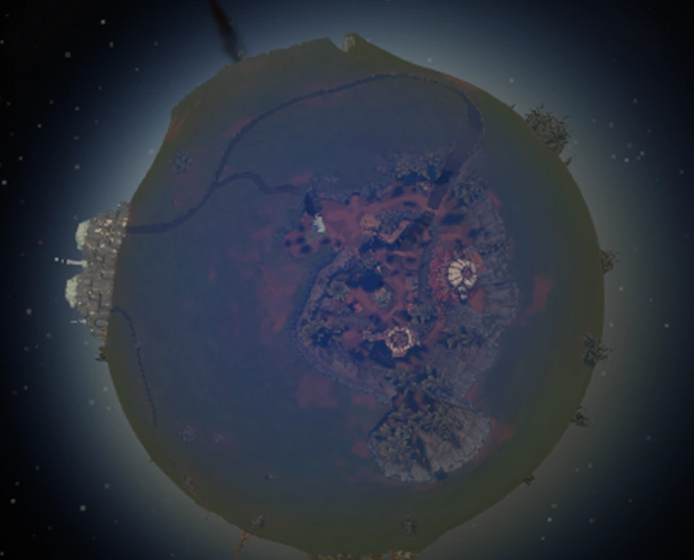
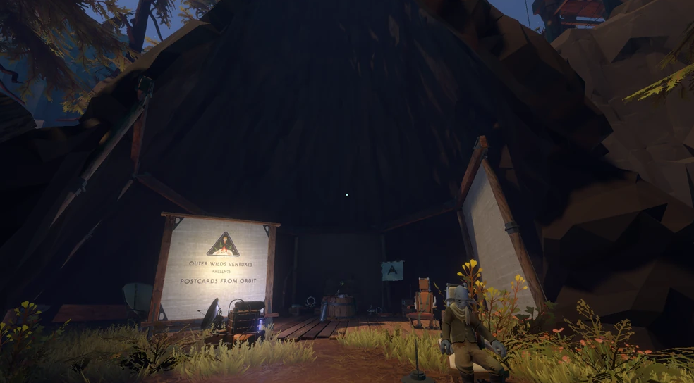
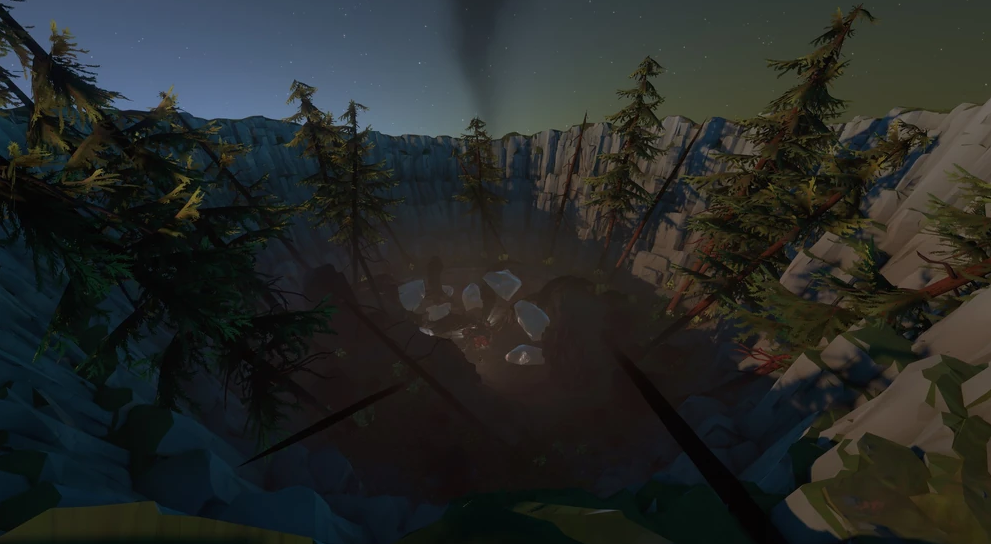

Nuestro Hogar! Casa de los inmensos bosques y acogedaras fogatas. Es el segundo planeta de nuestro sistema, completamente habitable! Casa de el "Outer Wilds Ventures" Nuestro equipo de exploradores de la galaxia.
Junto a 16 mas habitantes, Timber Hearth contiene muchos geisers, bosques, y minas en las cuales exploramos en busca de materiales para nuestro equipo de expediciones, hogares, y estructuras alrededor del planeta.
Nuestra luna, The Attlerock, fue el primer sujeto de pruebas en el que atterizamos una de nuestras naves, y el inicio a un monton de descubrimientos que realizariamos mucho mas tarde.


